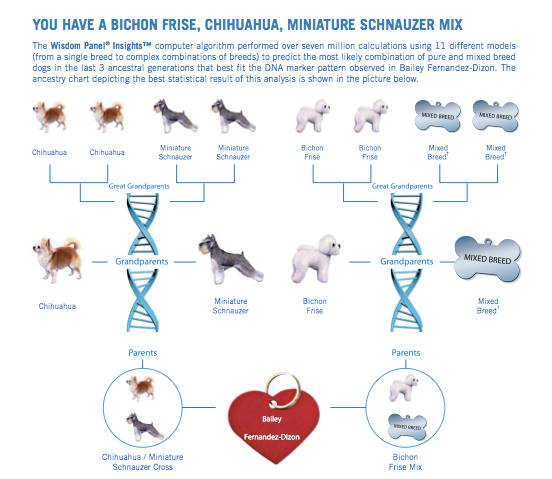

I was a stray in the Bronx and was found by the the Animal Care Control. They decided to move me to the Manhattan Animal Care Control, so that I could get adopted faster. My moms adopted me in June of 2011, and moved me to Brooklyn! In October of 2016, we moved from Brooklyn to Los Angeles, and boy is it sunny here! I love sitting out on the patio and watching people walk by from Runyon Canyon and going on car rides around town.
I also hang out with some pretty cool pups. I have friends of all shapes, sizes, ages, and breeds. We mostly just chill out, but sometimes we play with toys I get from Barkbox. I love when they come over!

They didn't know too much about my past because I was a stray. Based on my dental records, I was a 1 years old when I was adopted. Because they didn't know the exact date, my moms said my birthday is Thanksgiving every year!
They also got a Wisdom Panel DNA Test done on me and found out that I am a few different breeds.
Based on my DNA test, I am a quarter Bichon Frise, a quarter Chihuahua, a quarter Schnauzer, and a quarter of a few other breeds.